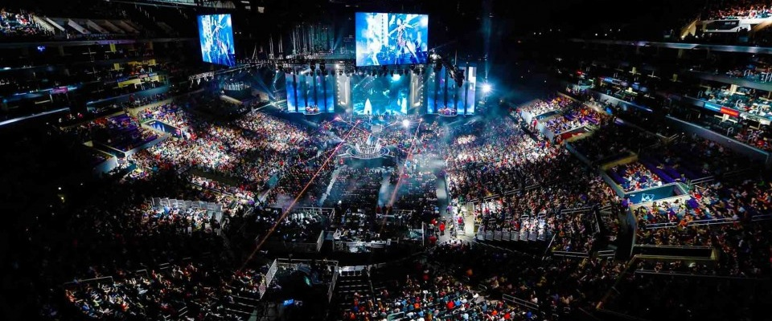

Torneos de Videojuegos
Los torneos de videojuegos en los ultimos años a tenido un gran crecimento devido a las nuevas tecnologias y al uso duario en la tecnologia. Los diferentes avances tecnologicos nos permiten tener equipos que nos permiten realizar diferentes acctividades. Durante la ultima decada los videojuegos han tenido una gran acojida de tal manera que se generan eventos a nivel mundial de torneos de Videojuegos.
El uso de los videojuegos es tan variado, que se utiliza para la eduacacion, medicina y principalmente el entretenimineto, hoy en dia los jovenes pasan horas jugando videojuegos y en los ultimos años los juegos en linea han tenido un crecimineto importante, pues los juegos en equipo son los mas solicitados por los usuarios.
A nivel mundial se realizan diferentes torneos de videojuegos, el torneo principal es realizado por EA sports que es la compania organizadora de la competencia mas grande del mundo, donde jugadores de diferentes partes del mundo se reunen para poner a prueba sus habilidades frente a una PC.
